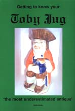
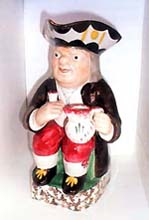
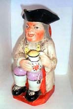

| Getting to Know Your Toby Jug
by Ron Earl. Review by Steven Goldate.
Although
similar Delft jugs existed in the Netherlands, the Toby jug was
first developed and popularized in England from around 1762 by the
Staffordshire potter Ralph Wood. The jug depicts a seated man wearing
an English ‘tricorn’ hat and holding a mug of beer and
a glass or pipe. The original jug is supposed to have been inspired
by a song of 1761 about one Toby Philpot - ‘Dear
Tom, This Brown Jug’. First other Staffordshire potteries,
then workshops around England and eventually other countries copied
the idea. Toby jugs are now highly collectible.
Author Ron Earl has been an avid collector of Toby Jugs since 1950.
His collection numbers 250 jugs, many dating back to the 18th century.
Since he started his collection, the hobby has led to various articles
and now a book on the topic. He is also a Toby
Jug dealer.

A scarcity of books on the subject matter led Earl to write 'Getting
to Know Your Toby Jug'. Earl descibes the history and types
of Toby Jugs, beginning with 'The Ordinary', the quintissential
Toby in a sitting position with a jug of beer in the left hand and
a glass or a pipe in the right. This is followed by descriptions
of variations on the Toby, e.g. the 'Thin Man. Earl then goes on
to discuss the Toby's characteristic 'Tricorn' hat, their faces,
clothing and other details. Earl also gives advice on how and where
to buy Toby Jugs.
The booklet is richly illustrated in color throughout and will
be a great addition to the Toby collexcto's library or for anyone
interetsed in this old English curiosity.
To find out more about Toby Jugs or how to buy the book, contact
the author, Ron Earl.
More Book Reviews
More Articles
|